I fell in love once. And I thought It’d be the strongest I ever felt. I felt happy, safe, I felt free.
I fell in love in this city, and I thought I’d never get to again. A year ago today, I proved myself wrong.
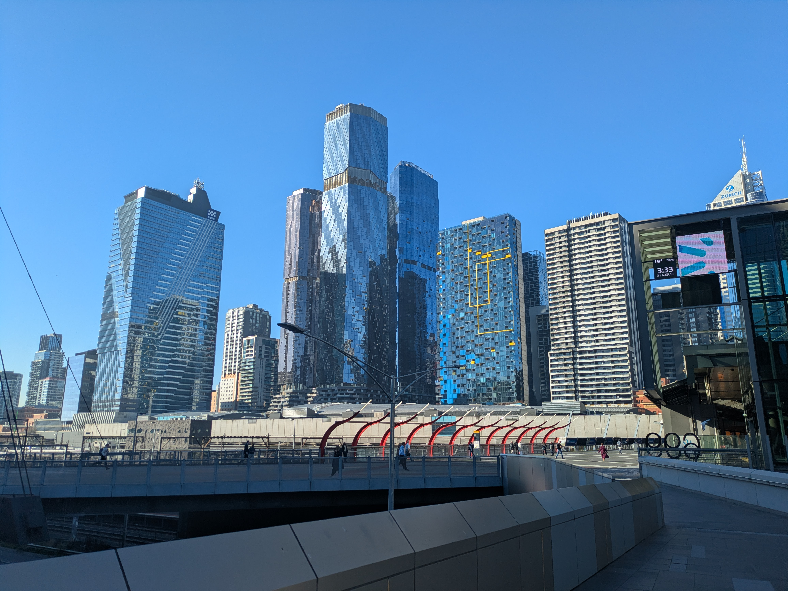
I was born in filth, and for all my life I was told to push through it until I could leave. And I did, I accepted that, that I had to just, exist, until I could live.
But I met someone, who made me feel, alive. Who gave me hope, who gave me a means to escape.
That didn’t last long. But I did escape with her for a short time. We spent 2 weeks together in a city I’ve never been to before, but one I dreamt of.
I heard it was a great place to live, so I always wanted to move there.
Those 2 weeks were. Well they were intoxicating, she was intoxicating.
And I thought I fell in love with her harder and harder, but, I’ve come to realise, It wasn’t her I kept falling like dominoes for. It was this place.
After everything that happened, It wasn’t her I missed truly, it was freedom, it was life.
I wallowed in sadness, in pain, for a short time I thought my chance was gone.
My one chance at life, my once chance at freedom, gone.
I thought I was going to die in that filth. In that place.
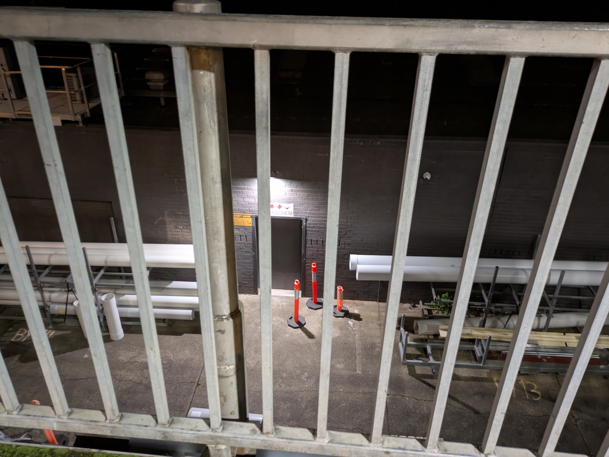
Then I decided that was stupid. I somehow got a shitty job, and saved as much as I could, with the goal of moving in the new year.
I moved 3 months before that.
I’ve gotten the train from that place to here twice. The first time was to see her, the second time was to live.
It was a weird experience taking everything I had with me in 2 suitcases and a box or 2 I sent in the mail a week before hand.
Everything I owned, everything from my life, condescend into a few small objects.
There’s something about spring, something about the slow beginning of warmth, something about the sun, and the flowers, something that makes it feel like life is just beginning.
It was spring when I first moved, and I kinda hated it. I had hayfever for the first time, and it was so windy.
But it felt like a new start.
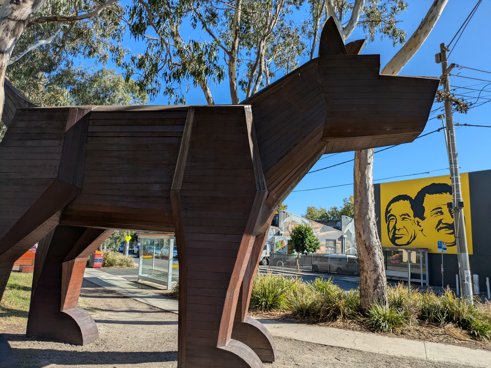
A lot of bad stuff happened those first few months.
But I don’t want to dwell on that. Pretty quickly I found safety, I found a house I wasn’t afraid to be in.
I could rest for the first time ever, I could find peace.
And eventually I found a home. A place I loved, with people that were nice, with friends, where I feel more then safe, I feel welcomed.
I remember I use to go to the city multiple times a week.
Seeing the buildings tower over me, seeing streets filled with people, seeing trains and trams go by, it, it made me feel alive.
I got busy though. I got a job, and I haven’t been able to go there as much.
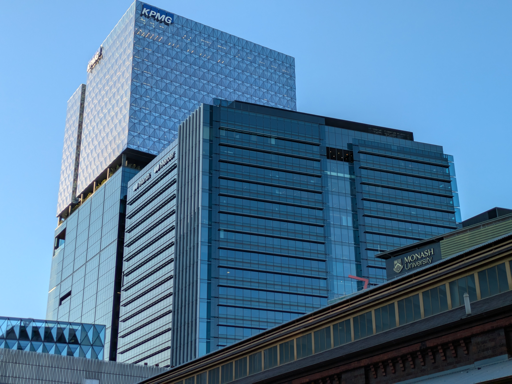
But I’ve been to other parts of the city, I’ve been to beautiful inner suburbs, stunning rivers, horrible monuments to suburbia, cozy streets.
I keep finding more, more world, more life, in places I’ve never been. Finding more places to love, to look forward to having a chance to go to.
I’ve met people, and reconnected with people. I have friends here, I have family, I have people I would do anything for.
And I never really had that before. There are people where just being in the presence of, doing mundane things with, remind me of why I did all this.
Why I moved here.
There’s community here. When I first moved here I was determined to socialize as much as I could and I did.
But then a certain event I really liked broke down, and a few other bad things happened in my life, and to be honest, I kinda isolated myself for a while.
But recently, I’ve been going out again, or atleast trying to.
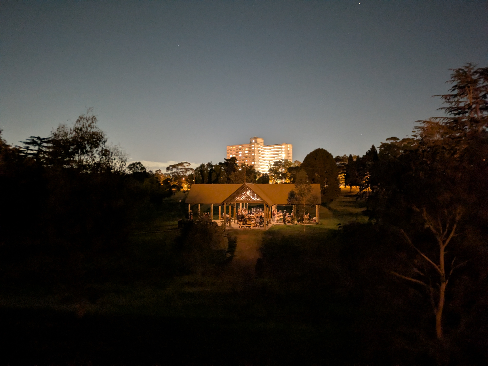
I went to a gig, just to get out of the house and maybe meet some people, music is one of my main interests, one of the main reasons I love this world, but the loud environment always overstimulated me.
I tried something a bit silly. I closed my eyes, and leaned against the wall.
Then it all clicked.
I fell inlove with music again.
The sound of the cymbals, the feel and rumble of the bass, the forwardness of the vocals, it all consumed me.
The feel of community around me, the sound of the music, it was all perfect. I fell inlove again. I’ve been having a lot of moments like that recently.
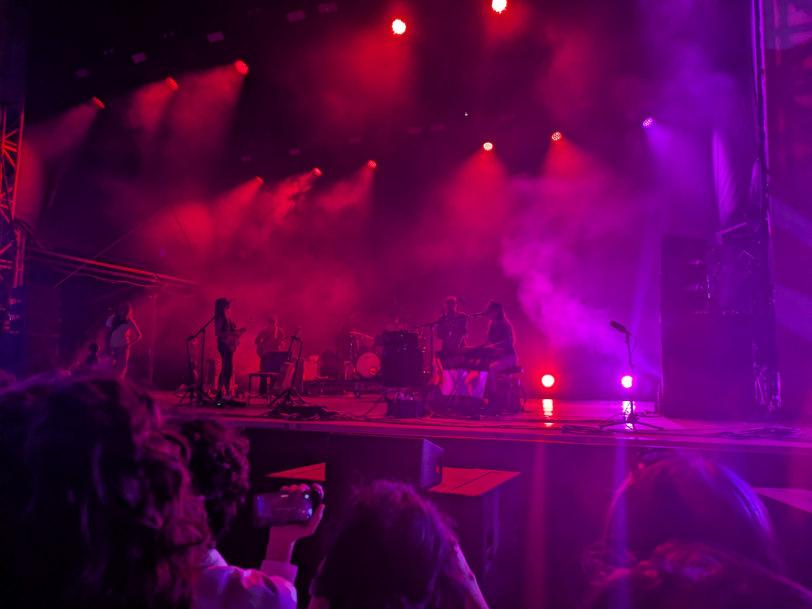
Whenever I caught a glimpse of myself in a mirror, at home, or in a store, it was an uncomfortable experince for me.
When I was in public and caught a glimpse of myself, before I realised it was me, I thought it was some.
Thing.
I started estrogen a few months ago, and before that I started taking are of myself.
Estrogen and self improvement is like the opposite of death by a thousand cuts. You don’t realise the progress you’ve made.
You just see yourself in the mirror in public one day, and before you realise its you, you think. “Oh I want her number.”
You just finally feel connected, feel at home in your body.
I look at myself in the mirror and most days I love who looks back.
I’ve fallen in love again.
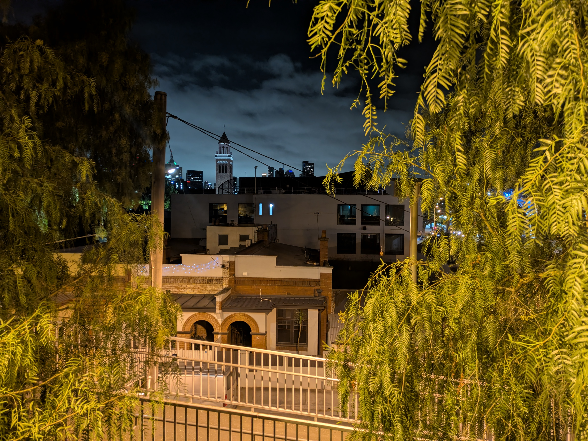
I have a house, a home I love, with people who are nice to me, who make me feel safe.
I have a room where I can decorate it how I like, where the house isn’t falling apart. I’m in love with the space I occupy.
I know it's silly, but I have plushies I love and that make me feel the safest I've ever felt.
I have a bed, a place to rest that feels. Safe. That feels like home.
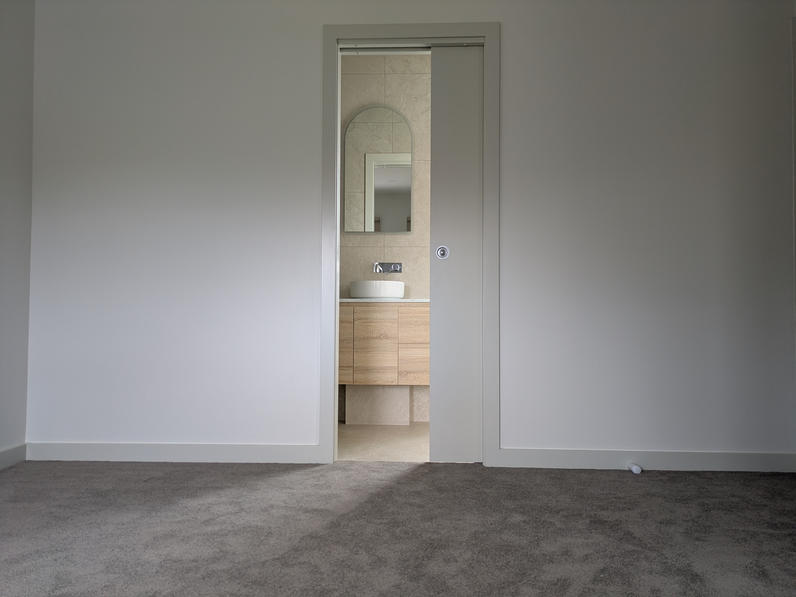
I walk down the city streets, the buildings towering over me, I walk down inner suburban streets, I catch the train, the tram, and there’s people.
There’s people with lives, people who take the time out of their day to compliment my bag, to make conversation with me, people I’ll probably never see again.
I see people wearing nerdy headphones, people with pins or badges of shows I love on their bags, and I feel so connected, I don’t feel so alone.
I fall in love again.
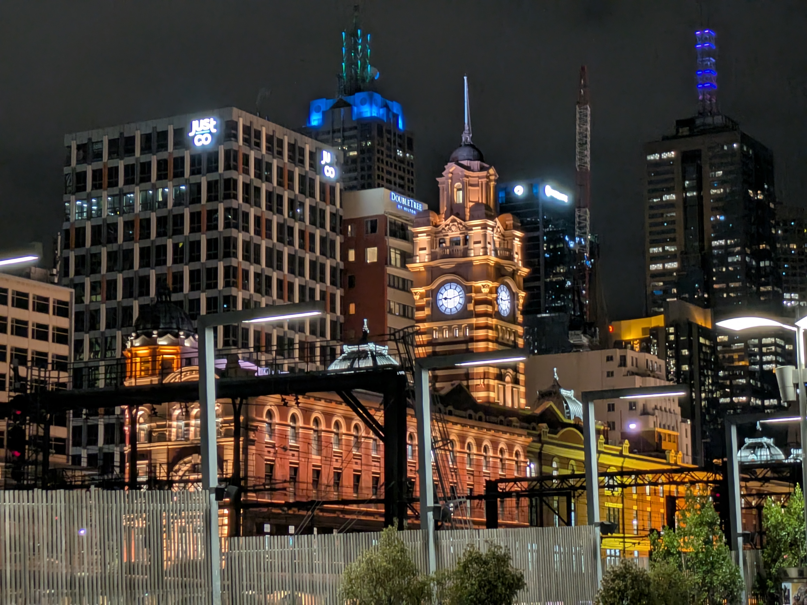
I’m existing in the company of a friend. I’m going out for dinner, I’m listening to music with people.
I’m going down the street, I’m in my friends car, we’re getting food or at the shops.
We’re playing minigolf, eating ice cream in a bit of park near the river, we're out for dinner then laying in my bed after.
We’re watching a movie on yalls new surround sound system, we’re at a gig together and we decide we’re hungry so we go to that burger spot I really like.
We’re in your car getting food because I’m sad, or just sitting in your room. I'm resting my head against your chest, you're squeezing me tight. I'm doing my best to help, we're in your bed watching one of my favourite shows, we're making pizza.
Im squeezing my friends as hard as I can when I hug them. Not just because I find it fun, but just so I hope they know how much they mean to me.
This is what I always wanted. I think I’ve finally made it.
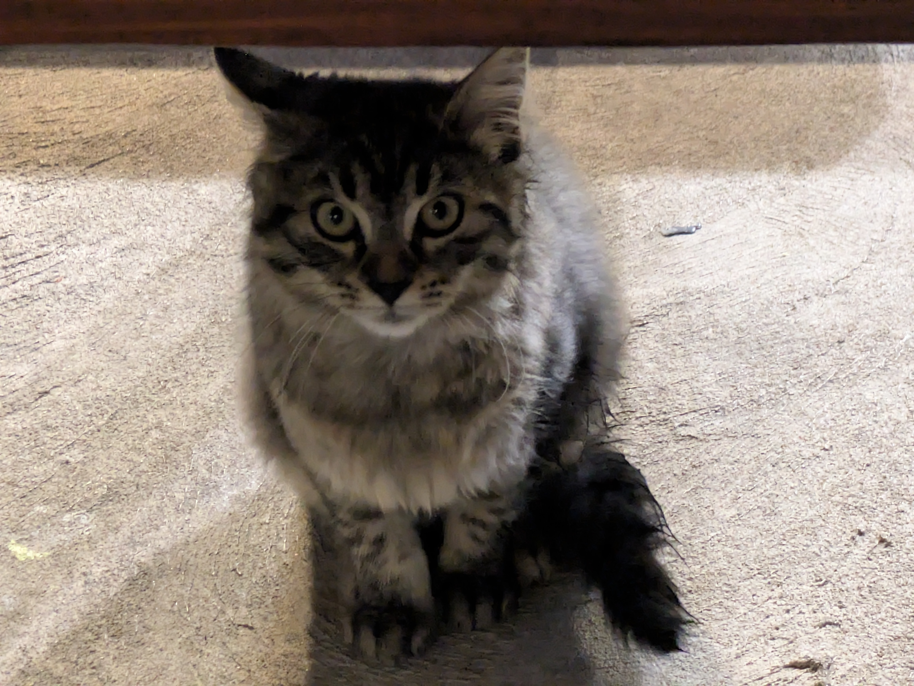
When I moved here, I kinda hoped id find someone to fall in love with, and I kinda chased that for a bit, or chased the feeling of being wanted, being desired.
But I’ve come to realise, I am full of want, of desire, the desire to exist, the desire to do things, I’m full of love. I’ve fallen in love again, with this place, with these people, and with myself.
And I don’t think ill ever stop falling in love.
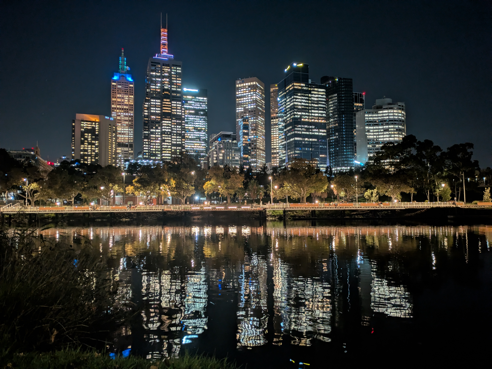
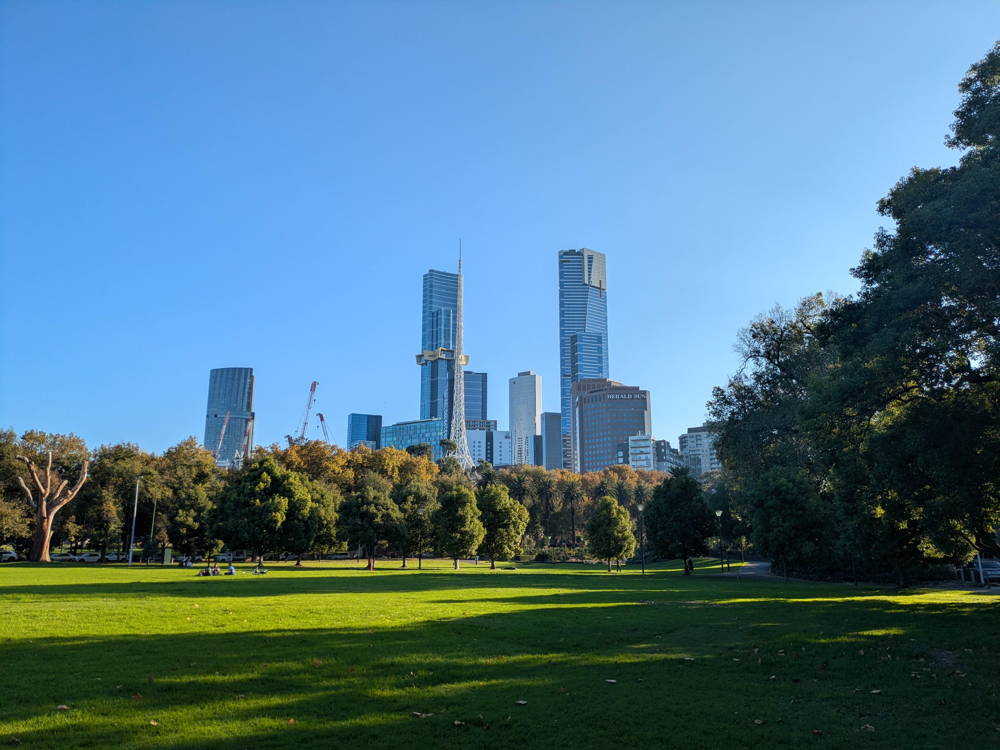